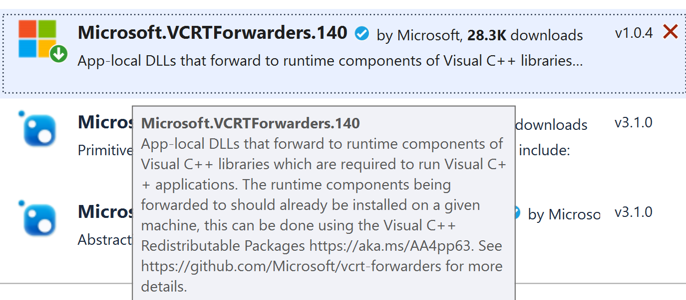
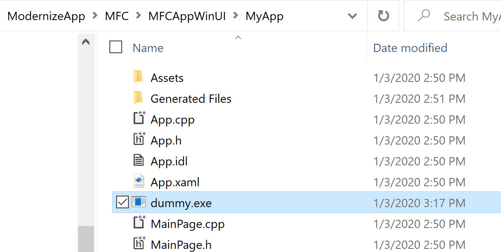
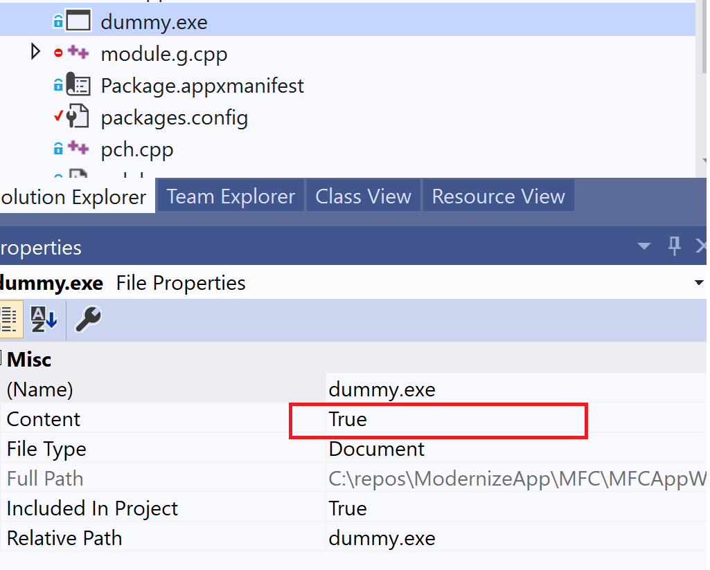
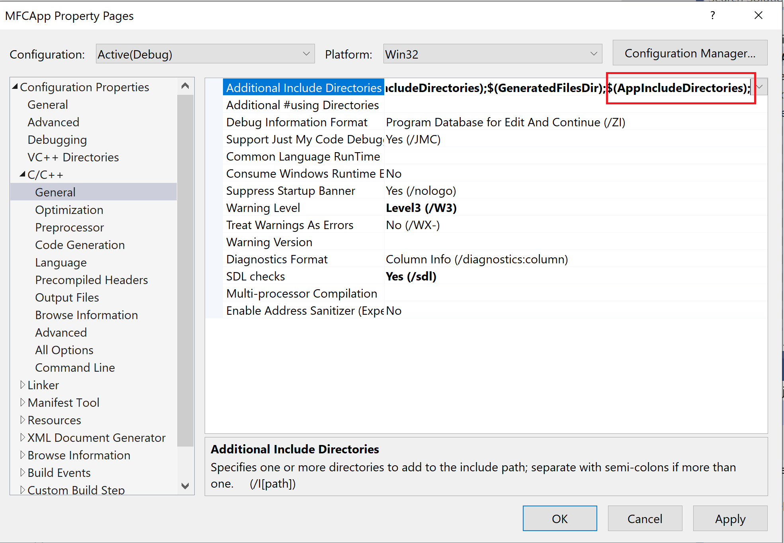
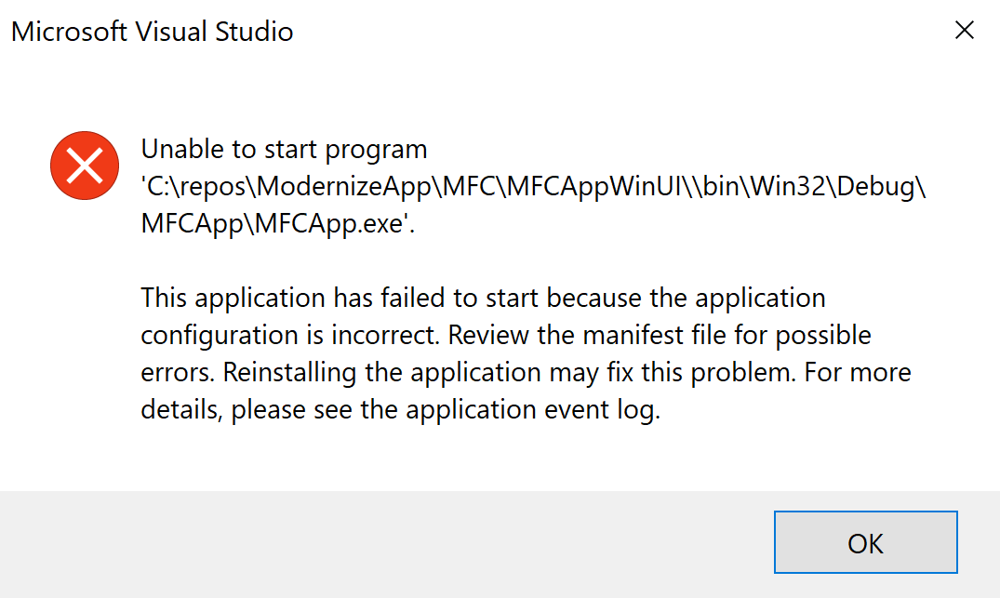
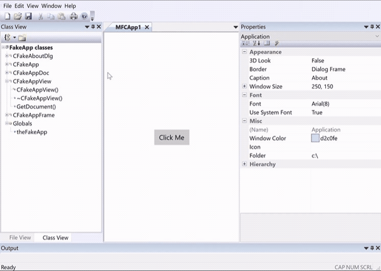
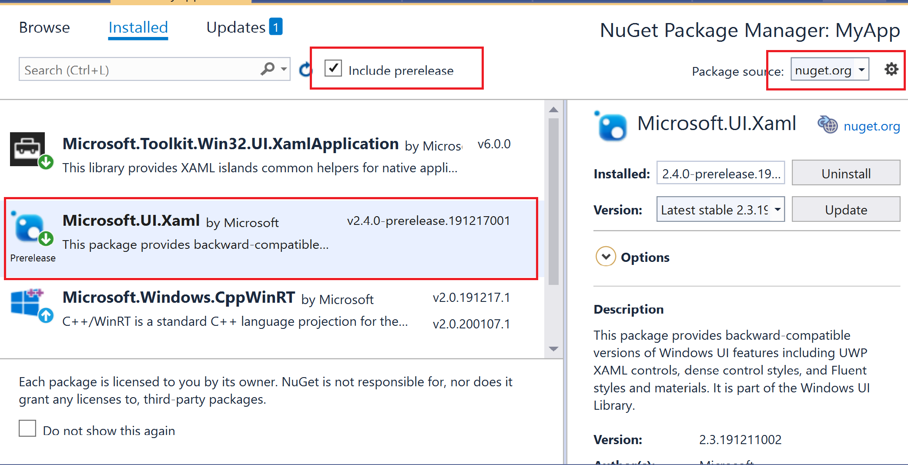
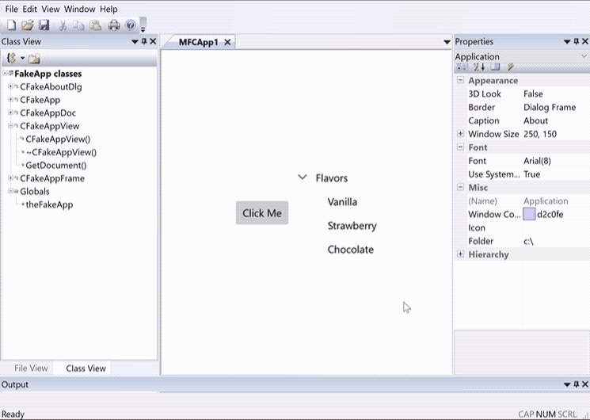

Host Custom UWP Controls in MFC MDI Project using XAML Islands
This article explains how to modernize MFC MDI project with custom UWP Controls through XAML Islands. With custom UWP controls, it allows us to define control layout easily through XAML pages. Not only putting standard UWP controls into the custom control, we can also integrate other custom controls as well, such as latest WinUI controls. We will use a new Xaml Application project to bring the custom UWP controls into our MFC project. This article has mentioned how to use the new XAML application in Win32 C++ application, we will give more detailed steps for MFC project.
Overall, in our MFC project, we will have two parts to demonstrate this method:
MFC MDI Project
A companion UWP app project that defines a XamlApplication object.
In this project, we will define a custom UWP control and export it so that MFC can use the custom UWP control.
Development Environment
Visual Studio 2019 (16.3.6)
Windows 10 1909 (18363.476)
Windows 10 SDK (10.0.18362.1)
Configure MFC Project
Create MFC App in Visual Studio 2019, will name it MFCAPP
Use below configuration to create the MFCAPP project
click Finish Build and Run it, here is its default UI
image
In Solution Explorer, right-click the MFCAPP project node, click Retarget Project, select the 10.0.18362.0 or a later SDK release, and then click OK.
Install the Microsoft.Windows.CppWinRT NuGet package:
Right-click the project in Solution Explorer and choose Manage NuGet Packages.
Select the Browse tab, search for the Microsoft.Windows.CppWinRT package, and install the latest version of this package.
image
After install the nuget package, check the MFC project properties, you will notice its C++ version is ISO C++17, which is required by C++/WinRT:
image
Build this MFCApp, we can see winrt projected files are generated in the “Generated Files” folder:
image
Install the Microsoft.Toolkit.Win32.UI.SDK NuGet package:
In the NuGet Package Manager window, make sure that Include prerelease is selected.
Select the Browse tab, search for the Microsoft.Toolkit.Win32.UI.SDK package, and install version v6.0.0 (or Later) of this package.
image
Install the Microsoft.VCRTForwarders.140 nuget package as well. Running Custom UWP Control in this project will require VC libs.

Configure UWP Project
In Solution Explorer, right-click the solution node and select Add -> New Project.
Add a Blank App (C++/WinRT) project to your solution.
Give it a name MyApp, and create it, Make sure the target version and minimum version are both set to Windows 10, version 1903 or later.
Right click the MyApp and open its properties, make sure its C++/WinRT configuration is as below:
Change its output type from .EXE to Dynamic Library
Save a dummy.exe into the MyApp folder. It doesn’t need to be a real exe, just input “dummy exe file” in notepad, and save it as dummy.exe.

Make sure the Content property of dummy.exe is True.

Now edit Package.appxmanifest, change the Executable attribute to “dummy.exe”
image
Right click the MyApp project, select Unload Project
Right click the MyApp (Unloaded) project, select Edit MyApp.vcxproj
Add below properties to the MyApp.vcxproj project file:
If you build MyApp now, it should create MyApp.dll without any error.
Centralize Output, Input and C++/WinRT files in Solution
This step is necessary for our next steps because we need to include winrt header files in different projects properly, and MFCApp also needs to reference MyApp resource files.
Add a new Solution.Props file by right clicking the solution node, and select Add -> New Item:
image
Use below content to overwrite the Solution.Props:
Right click the MFCApp (Unloaded) project, select Reload Project.
Right click MFCApp, select Properties, setup $(AppIncludeDirectories) as a part of include file path, this macro has been defined in the above project file:

Set “Per Monitor DPI Aware” for DPI Awareness otherwise you may be not able to start this MFCApp when it is “High DPI Aware” and hit configuration error in Manifest: 
image
Open pch.h, add below code to include necessary winrt header files:
Add AdjustLayout function to make XAML content layout properly in MFCAppView.cpp :
```C++
void CMFCAppView::AdjustLayout()
{
if (_desktopWindowXamlSource != nullptr)
{
auto interop = _desktopWindowXamlSource.as<IDesktopWindowXamlSourceNative>();
HWND xamlHostHwnd = NULL;
check_hresult(interop->get_WindowHandle(&xamlHostHwnd));
RECT windowRect;
GetWindowRect(&windowRect);
::SetWindowPos(xamlHostHwnd, NULL, 0, 0, windowRect.right - windowRect.left, windowRect.bottom - windowRect.top, SWP_SHOWWINDOW);
}
}
```
Don't forget to declare it in MFCAppView.h:
```C++
public:
void AdjustLayout();
```
Right click the MFCApp project, select Class Wizard
Add a handler to handle WM_SIZE so that when view size changes we can handle it:
image
Modify the OnSize method handler:
```C++
void CMFCAppView::OnSize(UINT nType, int cx, int cy)
{
CView::OnSize(nType, cx, cy);
AdjustLayout();
}
```
Now you can build and run this MFCApp. It should display a button in the central of view window:
image
Using WinUI in UWP Custom Control in MyApp UWP Project
In MyApp, let’s add the Microsoft.UI.Xaml nuget package:
image
[!NOTE] It is possible some version of WinUI nuget package doesn’t create Microsoft.UI.Xaml.Controls class registering info into AppxManifest.xml, which is required by MFCApp later. This version used above works well. If you found MFCApp failed to run with “Class is not registered” error, please try this version.
Modify App.Xaml, TreeViewUserControl.Xaml, pch.h and TreeViewUserContro.cpp as below:
For detailed reasons on modifying these files, can refer to this article
Add the Windows UI (WinUI) Theme Resources to App.Xmal
Build and run MFCApp, if steps have been taken exactly as above, it will show as below:
image
Wrap Up
This article gives detailed steps on how to leverage XamplApplication to host custom XAML control in document view of traditional MFC Mulitple Document Interface project, and the important thing is you can use WinUI to modernize the MFC application now. The whole smaple solution can be found from this repo: https://github.com/freistli/ModernizeApp/tree/master/MFC/MFCAppWinUI